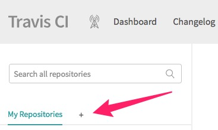

Outline¶
- sign in Travis
- manage Travis settings
Sign in Travis¶
You can register for an account on Travis and bind to GitHub.
Manage Travis Settings¶
-
Create a new repository by click
+to choose the repository we pushed before.  -
After that we need to set this repository by entering into the settings section.

-
There are a few environmen variables we need to add.
CUSTOM_DOMAIN is optional, GIT_EMAIL is your GitHub email, GIT_NAME is your GitHub name
, GITHUB_TOKEN is the GitHub token we generated before.
Remember to disable the Display value in build log at the bottom